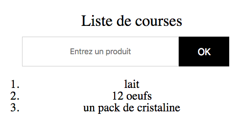

Clic !
Exo 1 : compteur
Créer un compteur de clics.
Exo 2 : sondage
On peut cliquer sur deux boutons, et il faut compter le nombre de clics sur chacun d'eux :

Exo 3 : liste de courses
- Récupérer le contenu d'un input à la soumission du formulaire
- Si pas de contenu, message d'erreur dans la console
- Si une
value existe, on ajoute un nouvel élément dans la liste ordonnée <ol>

BONUS Exo 4 : couleurs
- Tester si la
value est une couleur
=> Il faut que ça commence par un #
=> Il faut que la longueur fasse 4 (#FFF) ou 7 (#FFFFFF)
- Si ce n'est pas une couleur, écrire un message d'erreur.
- Si c'est une couleur, on l'ajoute au
<ul>.
- On met le
<li> dans la couleur de la couleur tapée
- On supprime la valeur de l'input à la soumission du formulaire